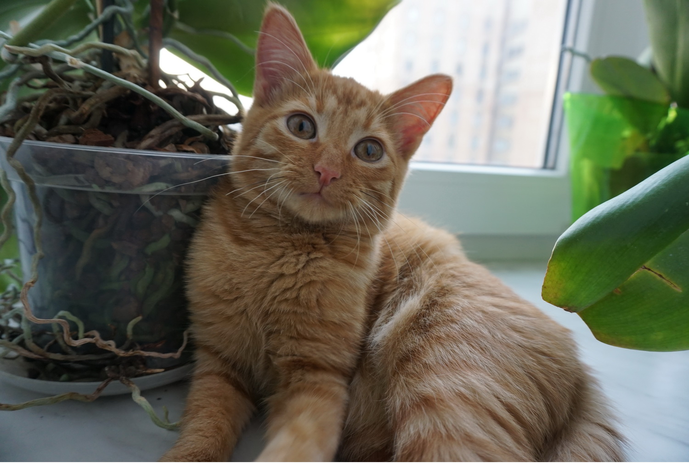
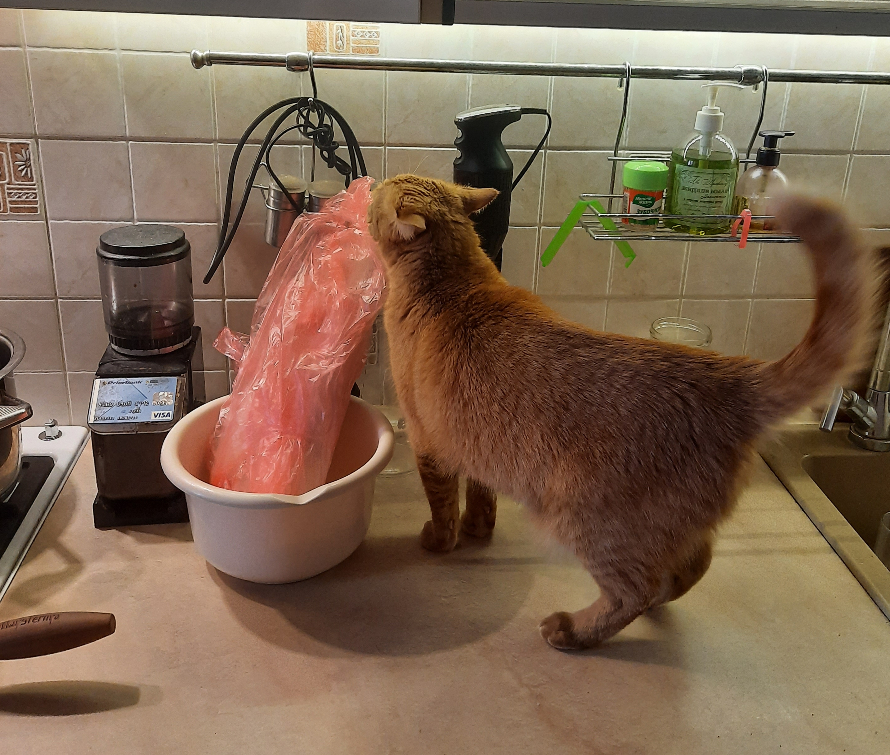
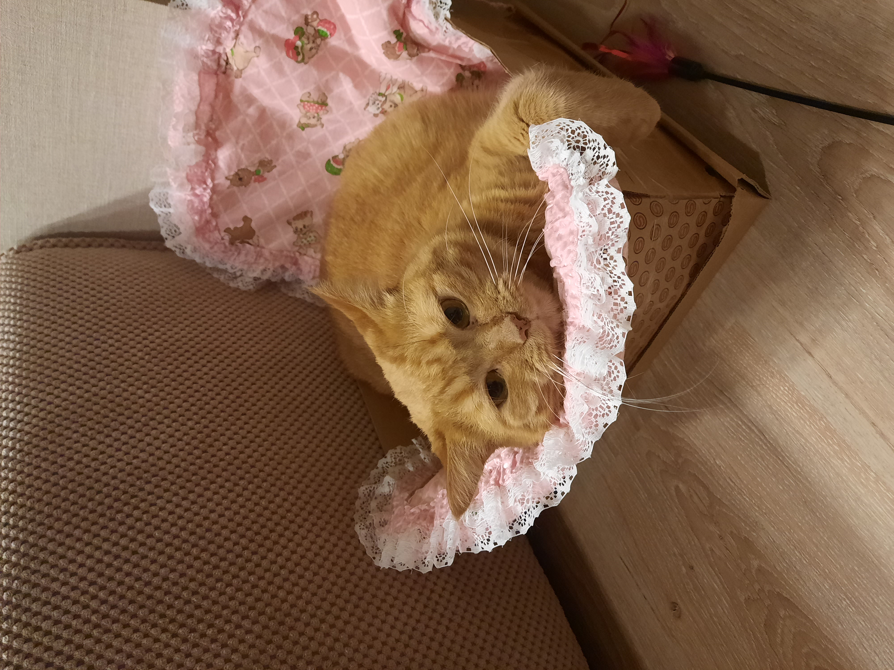

Для начала я расскажу про свое детство и юность

 Родился я на окраине города Бреста. Мама моя была породистая особа корниш-рексовских корней, звали ее Клеопатрой. Она мне даже как-то книжечку красивую показывала - родословная называется.
Папу я своего никогда не видел, но мама каждый раз, когда рассказывала о нем, томно поднимала глаза вверх и говорила, что он пленил ее своими медно-рыжими полосами на мускулистой спине.
Поэтому красотой я обязан и маме, и папе.
Как-то в наш дом пришли гости и рассказали хозяевам о своей мечте - рыжем котике. На что добрые люди в моем доме сказали эти гостям, что они с радостью подарят им меня. В то время я был маленький
и не понимал, хорошо это или плохо, когда ты живешь отдельно от мамы, поэтому не особенно сопротивлялся и поехал с ними в новый дом. Так я оказался в новом жилище, которое представляло собой уютную и теплую трехкомнатную квартиру.
Мне сразу показали, где мой лоток с любимым наполнителем, где мой уголок для принятия пищи, место для сна мне предложили выбрать на свое усмотрение.
Так началась моя самостоятельная жизнь. Первое время я конечно скучал по маме, но потом мне объяснили, что серьезные и уважающие себя котики живут отдельно от мам.
Так как я считал себя именно таким, пришлось адаптироваться к новым условиям. Вскоре я понял, что когда ты единственный котэ в семье - это лучшее, что с тобой может случиться.
Стоило мне пискнуть как ко мне мчались мои человеки и начинали меня развлекать. А развлекаться по молодости ох как я любил! Чего только у меня тогда не было - и бантики из шуршащих оберток конфет, и пробки от вина, мячики.
Но мой фаворит игрушек до сих пор - это лазерная указка. Только в темное время суток под лазерную указку я мог спокойно скакать по обоям на стенах и мне за это ничего не прилетало.
В другое время почему то когда я тренировался грациозно прыгать - вопли от человеков стояли неимоверные. Странные люди.
Родился я на окраине города Бреста. Мама моя была породистая особа корниш-рексовских корней, звали ее Клеопатрой. Она мне даже как-то книжечку красивую показывала - родословная называется.
Папу я своего никогда не видел, но мама каждый раз, когда рассказывала о нем, томно поднимала глаза вверх и говорила, что он пленил ее своими медно-рыжими полосами на мускулистой спине.
Поэтому красотой я обязан и маме, и папе.
Как-то в наш дом пришли гости и рассказали хозяевам о своей мечте - рыжем котике. На что добрые люди в моем доме сказали эти гостям, что они с радостью подарят им меня. В то время я был маленький
и не понимал, хорошо это или плохо, когда ты живешь отдельно от мамы, поэтому не особенно сопротивлялся и поехал с ними в новый дом. Так я оказался в новом жилище, которое представляло собой уютную и теплую трехкомнатную квартиру.
Мне сразу показали, где мой лоток с любимым наполнителем, где мой уголок для принятия пищи, место для сна мне предложили выбрать на свое усмотрение.
Так началась моя самостоятельная жизнь. Первое время я конечно скучал по маме, но потом мне объяснили, что серьезные и уважающие себя котики живут отдельно от мам.
Так как я считал себя именно таким, пришлось адаптироваться к новым условиям. Вскоре я понял, что когда ты единственный котэ в семье - это лучшее, что с тобой может случиться.
Стоило мне пискнуть как ко мне мчались мои человеки и начинали меня развлекать. А развлекаться по молодости ох как я любил! Чего только у меня тогда не было - и бантики из шуршащих оберток конфет, и пробки от вина, мячики.
Но мой фаворит игрушек до сих пор - это лазерная указка. Только в темное время суток под лазерную указку я мог спокойно скакать по обоям на стенах и мне за это ничего не прилетало.
В другое время почему то когда я тренировался грациозно прыгать - вопли от человеков стояли неимоверные. Странные люди.
Теперь немного о моих вкусовых предпочтениях
 Кормят меня в основном сухим кормом в перемешку с мокрым. Перетестил я корма за свою жизнь много, но остановился как и полагается уважающему себя стерилизованному коту (да-да, был такой постыдный момент в моей жизни) на сухом корме Пурина Про План (да да да, Пурина мне доплачивают за рекламу) и паштетиках Вискас. Иногда, по праздникам, мои человеки угощают меня сырой говядиной, индейкой или курочкой. Но моя страсть - это сырая рыбка, я за нее готов продать все на свете! Пить я предпочитаю чистую воду исключительно из графина. Могу себе позволить. Так как я соблюдаю ЗОЖ, то и кушаю я как того требует мой организм. Даже ночью. Для этого требуется только громко мявкнуть женскому человеку на ухо, если не понимает с первого раза, то повторить свой мяв раза 3 (обычно ей хватает) как она идет к белому ящику с ручкой и достает мне оттуда свежий прохладный паштетик.
Мои увлечения
 Самое главное мое увлечение - это конечно сон. Спать я люблю больше всего на свете, в любое время и в принципе даже в любом месте. Но моя страсть - это коробочки. Там я чувствую себя особо защищенным и оттуда хозяевам сложновато выковорять меня, когда на них нападают припадки нежности и желания меня потискать. Еще люблю спать на окне в солнечных лучах. Рядом с моим спальным местом на окне стоит зеркало и каждый раз когда я смотрю в него и вижу свое великолепие в солнечных лучах, я убеждаюсь, что именно моя красота спасет мир! Второе по важности мое увлечение сейчас - это телевидение. Люблю вечерами глянуть интересное кино. Как серьезный мужчина предпочитаю и серьезное интеллектуальное кино, готов по сотне раз пересматривать Джеймс Бонда. В силу возраста играм я теперь предпочитаю наблюдение. Иногда конечно побегаю еще за лазерной указкой, но птички за окном теперь как-то интереснее. Смотрю на них и анализирую как же интересно устроен мир. Вообще рассказывать о себе я могу долго. Дабы не показаться ученым котом, мое амплуа немного все-таки другое, задавайте свои вопросы на мою электронную почту best_cat@gmail.com, с удовольствием на них отвечу.
Открою небольшой секрет: скоро доделаю канал в Telegram, так что будем на постоянной связи.